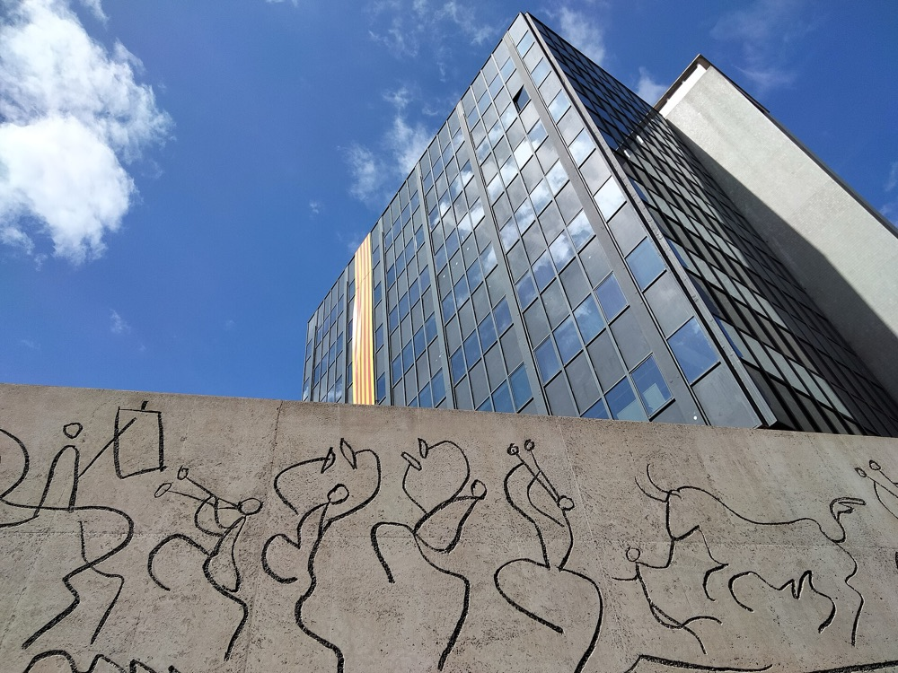
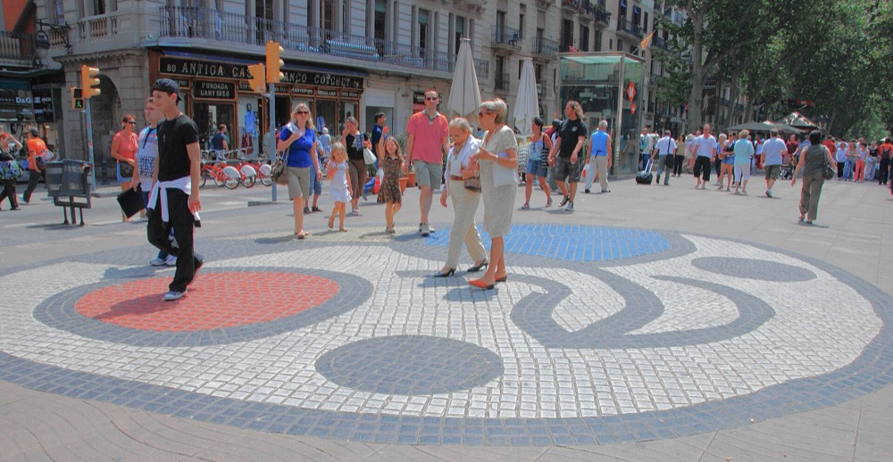
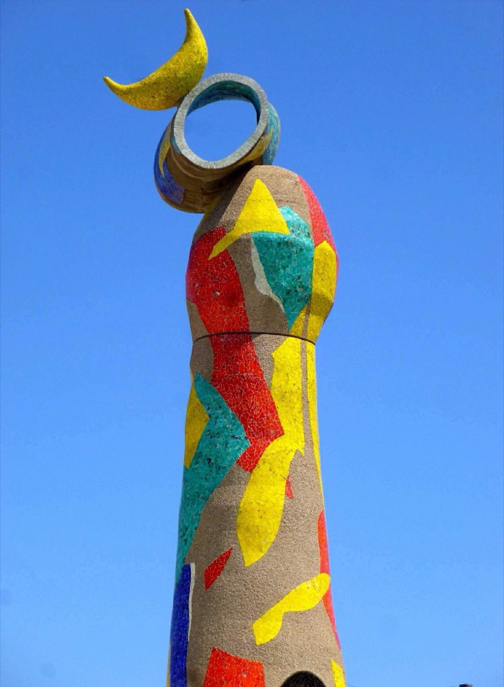
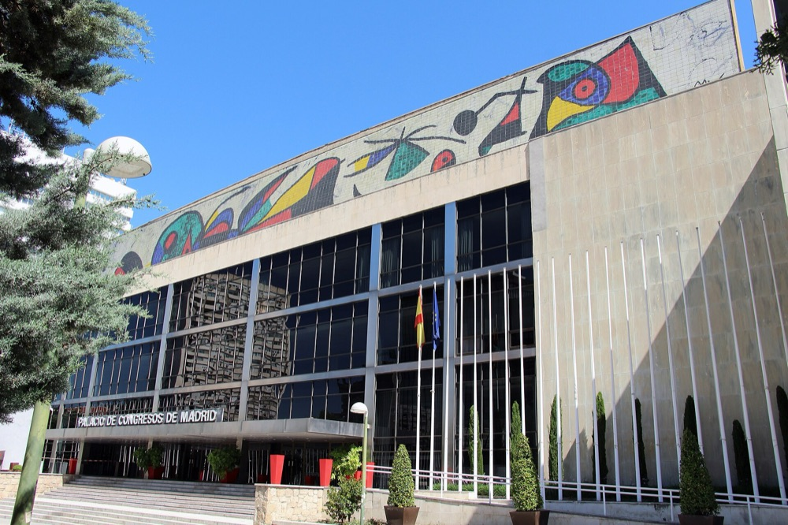
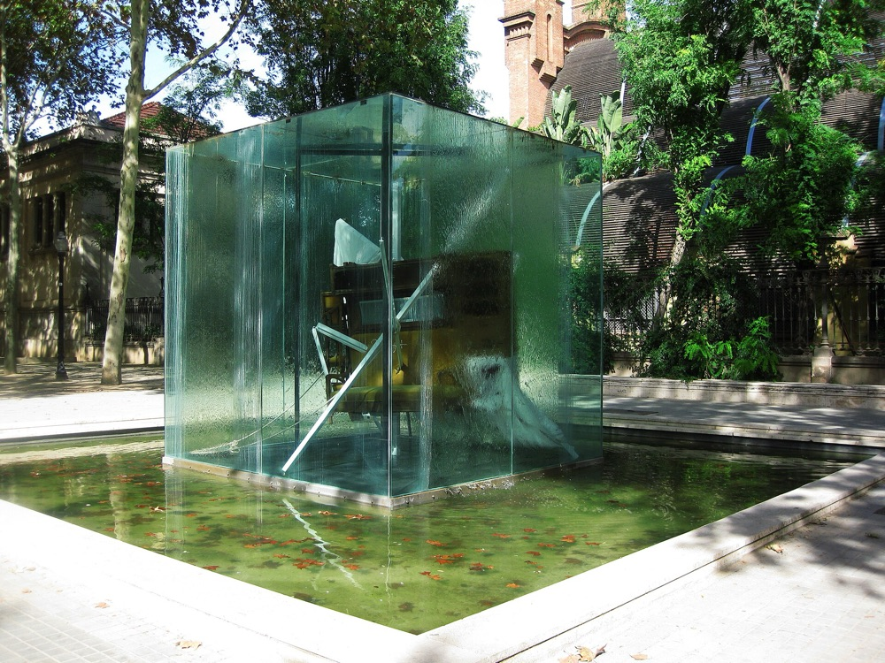
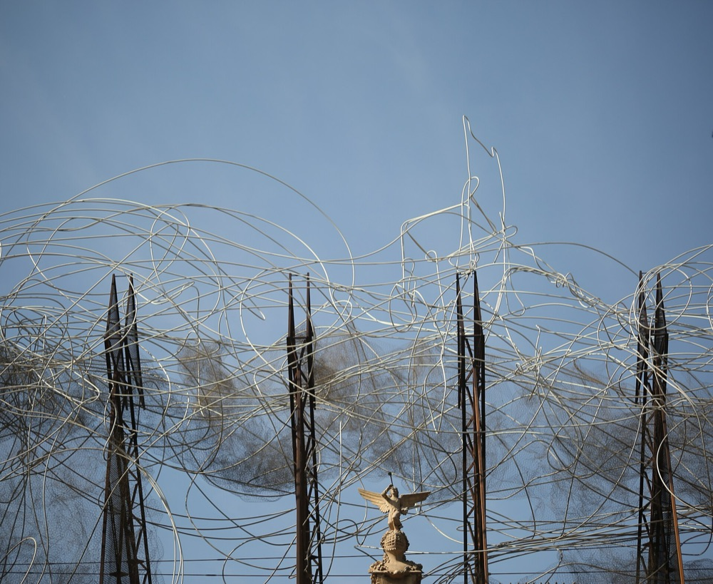
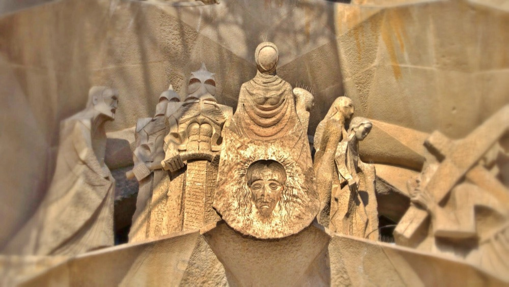
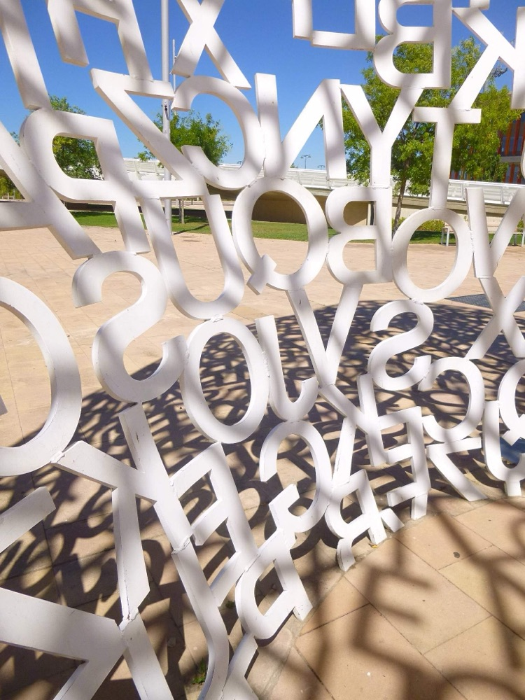
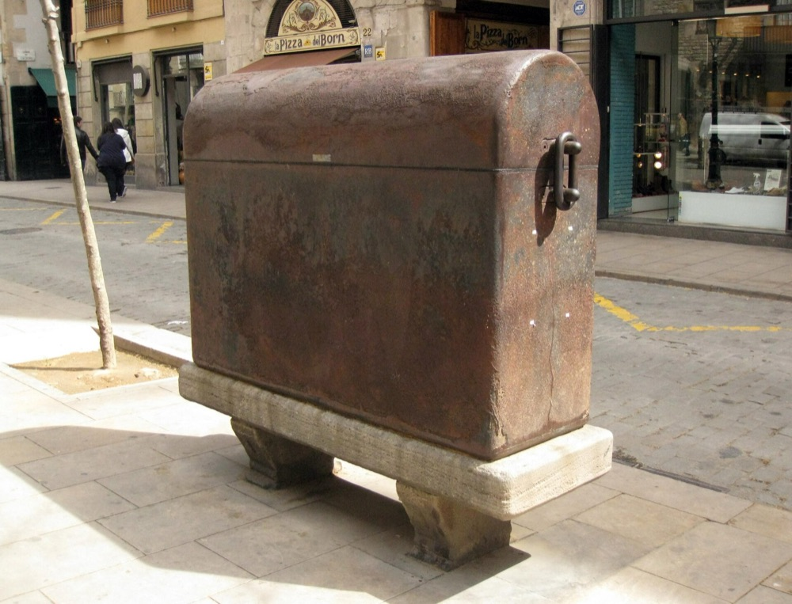
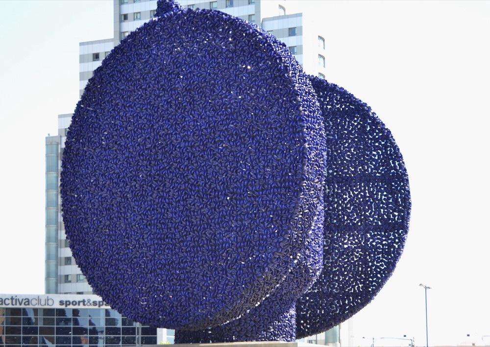

Muchos de los artistas de la colección tienen obra en las calles de Barcelona, Madrid, Zaragoza o Valencia. No forman parte de la colección, pero son la mejor forma de acercarse a su lenguaje antes de ver las piezas en persona.

Pablo PicassoFrisos del Col·legi d’Arquitectes de Catalunya1962 · Plaça Nova, BarcelonaDibujados por Picasso y grabados en el hormigón por Carl Nesjar: una de sus pocas obras concebidas para la calle.Foto: Enric · CC BY-SA 4.0 · Wikimedia Commons · filtro de color aplicado por Eleve Art; la versión modificada se ofrece bajo la misma licencia (CC BY-SA 4.0)

Joan MiróMosaico del Pla de l’Os1976 · La Rambla, BarcelonaMiles de personas lo pisan cada día sin saber que caminan sobre un Miró.Foto: Mike McBey · CC BY 2.0 · Wikimedia Commons · filtro de color aplicado por Eleve Art

Joan MiróDona i Ocell1983 · Parc de Joan Miró, BarcelonaVeintidós metros de cerámica trencadís: una de las últimas grandes obras de Miró.Foto: Zarateman · CC0 · Wikimedia Commons · filtro de color aplicado por Eleve Art

Joan MiróMural cerámico del Palacio de Congresos1980 · Paseo de la Castellana, MadridRealizado con el ceramista Joan Gardy Artigas para la fachada del edificio.Foto: Fred Romero from Paris, France · CC BY 2.0 · Wikimedia Commons · filtro de color aplicado por Eleve Art

Antoni TàpiesHomenatge a Picasso1983 · Passeig de Picasso, BarcelonaMuebles, telas y vigas dentro de un cubo de cristal bañado por el agua.Foto: Slaven Kosanovic · CC BY-SA 3.0 · Wikimedia Commons · filtro de color aplicado por Eleve Art; la versión modificada se ofrece bajo la misma licencia (CC BY-SA 3.0)

Antoni TàpiesNúvol i Cadira1990 · Fundació Antoni Tàpies, BarcelonaUna nube de tubo metálico corona la fundación del artista en el Eixample.Foto: Equip Fundació Antoni Tàpies · CC BY-SA 4.0 · Wikimedia Commons · filtro de color aplicado por Eleve Art; la versión modificada se ofrece bajo la misma licencia (CC BY-SA 4.0)

Josep Maria SubirachsFachada de la Pasión1987–2005 · Sagrada Família, BarcelonaCasi veinte años de trabajo de Subirachs en el templo de Gaudí.Foto: Lgz01 · CC BY-SA 3.0 · Wikimedia Commons · filtro de color aplicado por Eleve Art; la versión modificada se ofrece bajo la misma licencia (CC BY-SA 3.0)

Jaume PlensaEl Alma del Ebro2008 · Recinto Expo, ZaragozaUna figura sentada construida con letras: la escritura como cuerpo.Foto: Zarateman · CC0 · Wikimedia Commons · filtro de color aplicado por Eleve Art

Jaume PlensaBorn1992 · Passeig del Born, BarcelonaUn gran baúl y una bala de cañón de hierro fundido, en pleno paseo del Born.Foto: Enfo · CC BY-SA 3.0 es · Wikimedia Commons · filtro de color aplicado por Eleve Art; la versión modificada se ofrece bajo la misma licencia (CC BY-SA 3.0 es)

Manolo ValdésDama IbéricaValenciaLa Dama de Elche reinterpretada a escala monumental con su lenguaje de volúmenes.Foto: Joanbanjo · CC BY-SA 4.0 · Wikimedia Commons · filtro de color aplicado por Eleve Art; la versión modificada se ofrece bajo la misma licencia (CC BY-SA 4.0)
Fotografías de obras situadas de forma permanente en la vía pública (art. 35.2 de la Ley de Propiedad Intelectual), publicadas por sus autores con licencia libre en Wikimedia Commons. Ninguna de estas obras forma parte de la Colección Eleve. Eleve Art no está vinculada a los artistas, instituciones ni fotógrafos mencionados.